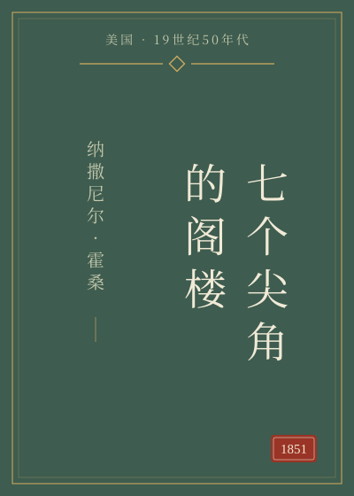
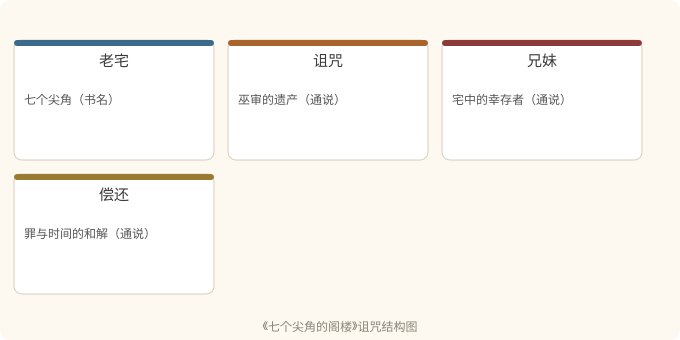

七个尖角的阁楼
一、基本信息
| 作者 | 霍桑 |
|---|---|
| 成书/出版 | 1851年（作者页注记：Britannica 列举——七个尖角的阁楼 (1851)） Nathaniel Hawthorne — Encyclopaedia Britannica（百科全书） |
| 国别/地区 | 美国 |
| 时代 | 近代 · 19世纪50年代 |
| 体裁 | 长篇小说 |
| 语言 | 英语 |

《七个尖角的阁楼》诅咒结构图（主题·结构图）
二、创作背景
作者页注记：七个尖角的阁楼 (1851)——'Britannica 列举'。
Britannica：霍桑——《红字》作者、罗曼司（romance）文体（作者页语境——待核）。
题材（通说待核）：品钦家族的老宅诅咒——巫审时代的遗产与现在的偿还。
三、内容脉络
（通说待核）莫尔上校的诅咒与品钦家族的没落。
（通说待核）赫普齐芭与克利福德：老宅中的兄妹。
四、主要人物表
| 人物 | 身份 | 说明 |
|---|---|---|
| 赫普齐芭 | 老宅居民 | （通说待核） |
| 克利福德 | 受害者 | （通说待核） |
五、主题与艺术特点
- 祖辈之罪的遗传（通说待核）。
- 老宅作为家族史的建筑（书名语境）。
- 清教遗产的清算（霍桑作者级主题——通说待核）。
六、影响与评论
- Britannica：霍桑美国罗曼司传统的代表（作者页语境——待核）。
Nathaniel Hawthorne — Encyclopaedia Britannica（百科全书） - Britannica：《红字》为代表作（作者页交叉）。
Nathaniel Hawthorne — Encyclopaedia Britannica（百科全书）
七、阅读建议
难点
- 塞勒姆巫审史。
- 罗曼司与小说的文体差异（霍桑自序——通说待核）。
- 《七个尖角的阁楼》中译名（《有七个尖角阁的房子》两说）待核。
- 英文原版（公有领域）。
霍桑第二作；与《红字》对读。
八、待核实
- 赫普齐芭/克利福德人名核对（通说）。
- 1851年出版（Ticknor & Fields说）待核。
- '七个尖角'宅邸原型（特纳-英格索尔宅）待核。